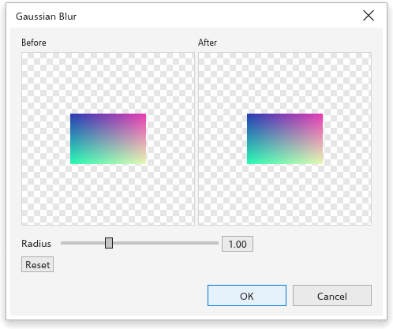

Растровые эффекты
Растровые эффекты меняют пиксели: размывают, повышают резкость, корректируют цвета, добавляют текстуры и художественные мазки. Они работают с растровыми изображениями, а также с векторными объектами, которые тогда рисуются как картинка, созданная эффектами, сохраняя при этом свою форму, заливку и абрис.
Эффекты хранятся отдельно от исходных пикселей: любой из них можно позже изменить, скрыть, переставить или удалить, а удаление последнего возвращает оригинал.
Применение растрового эффекта
- Выделите один или несколько объектов.
- Выберите группу в меню Эффекты и эффект.
- Эффекты без параметров применяются сразу. Остальные открывают диалоговое окно с предпросмотром до и после для первого выделенного объекта: задайте значения и нажмите ОК. Сброс возвращает все параметры к значениям по умолчанию.

Изменение всего выделенного является одним шагом отмены. Когда выделено растровое изображение, Ctrl+B открывает Яркость/контраст/интенсивность, Ctrl+Shift+B Цветовой баланс, а Ctrl+Shift+U Тон/насыщенность/яркость.
Группы эффектов
| Группа | Эффекты |
|---|---|
| Трёхмерные эффекты | Цилиндр, Тиснение, Загиб страницы, Сжатие/выпуклость, Сфера |
| Настройка | Автонастройка, Коррекция изображения, Улучшение контраста, Локальное выравнивание, Баланс по целевым цветам, Тоновая кривая, Яркость/контраст/интенсивность, Цветовой баланс, Гамма, Тон/насыщенность/яркость, Выборочная коррекция цвета, Замена цветов, Обесцветить, Микширование каналов |
| Художественные мазки | Уголь, Мелок конте, Восковой мелок, Кубизм, Импрессионизм, Мастихин, Пастель, Перо и тушь, Пуантилизм, Граттаж, Набросок, Акварель, Фломастер, Зернистость бумаги |
| Размытие | Направленное сглаживание, Размытие по Гауссу, Сглаживание зубчатых краёв, Низкие частоты, Размытие в движении, Радиальное размытие, Умное размытие, Сглаживание, Смягчение, Наезд |
| Камера | Окрашивание, Рассеивание, Фотофильтр, Сепия, Старое фото |
| Преобразование цвета | Битовые плоскости, Полутона, Психоделика, Соляризация |
| Контур | Выделение краев, Поиск краев, Обвод контура |
| Коррекция | Пыль и царапины |
| Творческие | Кристаллизация, Ткань, Рамка, Стеклянная плитка, Мозаика, Разброс, Тонированное стекло, Витраж, Виньетка, Вихрь |
| Пользовательские | Рельефная карта |
| Искажение | Блоки, Смещение, Деформация сеткой, Сдвиг, Пикселизация, Рябь, Завихрение, Плитка, Мокрая краска, Водоворот, Ветер |
| Шум | Добавить шум, Максимум, Медиана, Минимум, Удалить муар, Удалить шум |
| Резкость | Адаптивная нерезкость, Направленная резкость, Высокие частоты, Резкость, Контурная резкость |
| Текстура | Брусчатка, Морщины, Офорт, Пластик, Рельефная скульптура, Камень |
| Преобразование | Устранение чересстрочности, Инвертировать цвета, Постеризация |
Особые диалоговые окна
- Коррекция изображения открывает большое диалоговое окно: крупный предпросмотр, который можно масштабировать, прокручивать и поворачивать, показанный отдельно, рядом с оригиналом или с разделением; Автокоррекция и пипетки для точек белого и чёрного; ползунки температуры, оттенка, насыщенности, яркости, контраста, светов, теней и средних тонов с гистограммой; отмена и повтор внутри окна; снимки параметров для сравнения.
- Улучшение контраста показывает гистограмму с маркерами входных и выходных уровней, пипетки для чёрного и белого и Автокоррекцию.
- Тоновая кривая редактирует кривую для каждого канала (общий, красный, зелёный, синий) в четырёх стилях (кривая, прямые, от руки, гамма) поверх гистограммы; кривые можно сохранять и загружать.
- У цветов картинки, например в Замена цветов, есть пипетка: щёлкните предпросмотр, чтобы взять цвет под указателем.
Правка эффектов объекта
Раздел Эффекты панели Свойства перечисляет эффекты выделенного объекта, первый применённый вверху. В каждой строке есть флажок, чтобы показать или скрыть эффект, Изменить (открывает его диалоговое окно), Выше, Ниже и Удалить. Добавить эффект открывает группы эффектов.
Эффекты > Свести эффекты делает эффекты постоянными: растровое изображение сохраняет то, что показывает, а векторный объект становится растровым изображением.
Выбор эффектов
Эффекты > Effect Picker открывает окно, которое остаётся открытым во время работы, со всеми эффектами в виде маленьких картинок. Вводите текст в поле поиска, чтобы найти эффекты, или выберите группу или Недавние в списке. Когда что-то выделено, щёлкните плитку, чтобы применить эффект. Эффект можно также применить как линзу.
Эффекты, выходящие за края
Размытие и похожие эффекты могут выходить за края растрового изображения. Когда Растровые изображения > Раздуть растровое изображение > Автоматически раздуть растровое изображение включено (как по умолчанию), изображение увеличивается, чтобы освободить для них место. См. Передискретизация и выравнивание.
Чтобы сохранить растровое изображение с его эффектами в файл PNG, щёлкните его правой кнопкой и выберите Save Bitmap As.